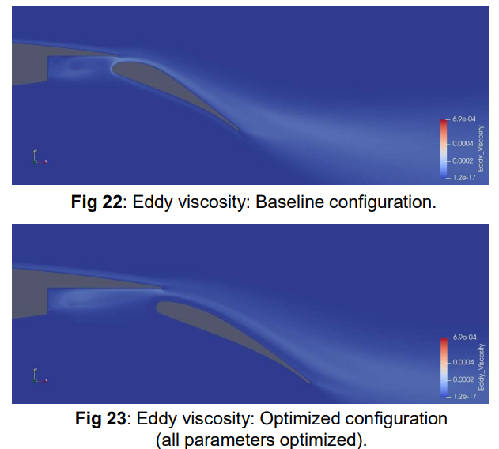

Aerodynamic Design of a Fowler Flap for a Hybrid Laminar Flow Control Airfoil
Studienarbeit project focused on maximizing lift (CL,max) for a Fowler flap on an HLFC airfoil at 15° (takeoff) and 30° (landing) deflections. Conducted 1000+ CFD runs with manual OAT optimization, achieving 4.14% and 4.56% improvements in CL,max.
Supervised by Prof. Dr.-Ing. Ingo Staack and Dr.-Ing. Stanislav Karpuk at IFL, TU Braunschweig, as part of SE2A Cluster of Excellence. Issued Dec 2024, submitted April 2025.
My Role
- Adapted PyAeroSweep framework for airfoil CFD
- Mesh & parameter sensitivity studies
- OAT optimization (10 parameters)
- Flow visualization & analysis
- Comparative evaluation of designs
Tools & Methods
- PyAeroSweep (Python framework)
- Fidelity Pointwise (meshing)
- SU2 (CFD with RANS k-ω SST)
- ParaView & MS Excel (post-processing)
- PARSEC parameterization
Motivation
Driven by EU Flightpath 2050 goals for 75% CO2 reduction per passenger-km and 90% NOx cut. High-lift devices like Fowler flaps are essential for low-speed phases, increasing CLmax by up to 100%. This project optimizes flap design for an HLFC airfoil to enhance efficiency and sustainability.

Effect of high-lift devices on CL vs α
Source: J. Wild, “High-Lift Aerodynamics”, CRC Press, 2022
Methodology
Adapted PyAeroSweep for automated geometry (PARSEC), meshing (Pointwise hybrid unstructured with T-Rex for boundary layers), CFD (SU2 steady RANS k-ω SST), and post-processing. Focused on flap parameterization with gaps (x_gap, y_gap) for slot flow optimization.

Mesh Sensitivity
Tested coarse, baseline, fine meshes. Baseline (112k cells) chosen for 0.27% CLmax difference vs fine, balancing accuracy and cost.

Parameter Sensitivity
OAT optimization of 10 parameters across α sweeps. x_gap & y_gap most sensitive; optimized to 0.75% & 1.97% of chord for better slot flow and separation delay.

Key Improvements
CL,max increased by 4.14% at 15° deflection and 4.56% at 30°. Better L/D at low α; reduced separation via optimized gaps/shapes.


Summary
1000+ CFD runs yielded optimized flap with cleaner channel flow, delayed separation, and higher CLmax. Foundation for URANS and automated (SBO) optimization in future work.
Acknowledgments
Thanks to supervisors Prof. Dr.-Ing. Ingo Staack, Dr.-Ing. Stanislav Karpuk and Dr.-Ing. Valerio Mosca at IFL, TU Braunschweig.